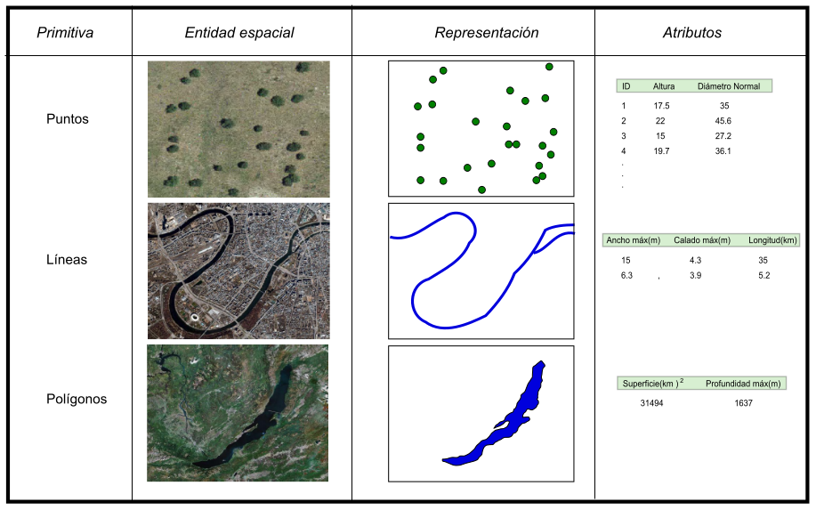

Modelo vectorial
Como se mencionó, en un SIG vectorial se consideran tres tipos de objetos:
Puntos
Representan objetos espaciales que sólo están localizados y no tienen dimensiones (largo y ancho). La posición de cada objeto queda determinada a través de las coordenadas (x,y).
Líneas
Son una sucesión de puntos y representan objetos espaciales con una dimensión, longitud. Su posición en el espacio se determina con dos pares de coordenadas.
Polígonos
Sucesión de líneas cerradas que representan objetos espaciales con dos dimensiones: longitud y ancho. La posición de cada objeto se fija con dos o más líneas cuyas coordenadas inicial y final coinciden.

Fuente: Ayala, 2014.